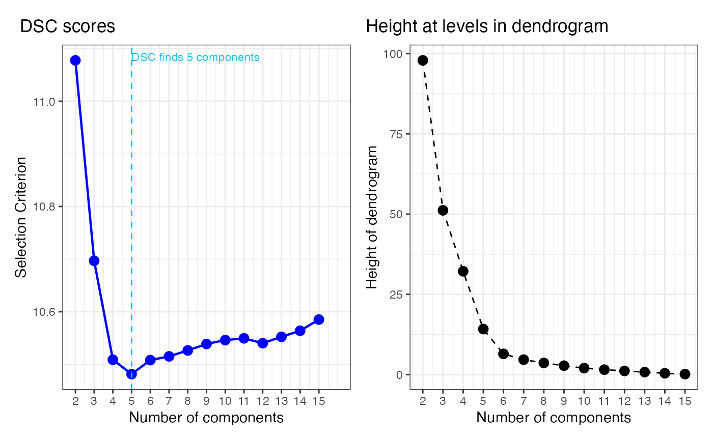

Dendrogram-single-cell-RNA-sequence
Linh Do, Dat Do
Source:vignettes/Dendrogram-single-cell-RNA-sequence.Rmd
Dendrogram-single-cell-RNA-sequence.RmdWe consider an application of the dendrogram of mixing measures in Single-cell RNA-sequencing data presented in Grace XY Zheng et al (2017), where they collected 68,000 peripheral blood mononuclear cells and labelled them based on expression profiles of 11 reference transcriptomes from known cell types. There are five cell types in the dataset: memory T cells, B cells, naive T cells, natural killer cells, and monocytes. After cleaning the data (dropping low-count cells and performing log pseudo-count transform), there are 41,159 cells left. The result of this experiment is reported in our paper Section 5.4.
We project the unlabeled data onto the first 10 Principal Component (PC) spaces and fit with a mixture of location-scale Gaussians with 15 components. We then visualize the 15-atom mixing measure with the dendrogram constructed.
library(dendroMix)
library(ggplot2)
library(mclust)
library(patchwork)
library(mvtnorm)
library(matrixStats)
data("tcell_id")
data("bcell_id")
data("mono_id")
data("nk_id")
data("naive_id")
sce <- load_sce_processed()
# Initialize color_list if not yet created (replace N with total number of cells)
N <- 10000 # replace this with your actual length
color_list <- rep(NA_integer_, N)
# Flatten and adjust inDSCes (-1 because Python is 0-based)
tcell_id <- as.vector(tcell_id) - 1
bcell_id <- as.vector(bcell_id) - 1
mono_id <- as.vector(mono_id) - 1
nk_id <- as.vector(nk_id) - 1
naive_id <- as.vector(naive_id) - 1
# Assign colors
color_list[tcell_id + 1] <- 0 # +1 since R is 1-based
color_list[bcell_id + 1] <- 1
color_list[mono_id + 1] <- 2
color_list[nk_id + 1] <- 3
color_list[naive_id + 1] <- 4Visualizing the data after applying PCA with 10 components.
# --- Prepare matrix: make rows = cells ---
sce_mat <- sce$x
N <- nrow(sce_mat)
# --- Figure out whether IDs are 0- or 1-based, then make a cell_type vector ---
all_ids <- c(tcell_id, bcell_id, mono_id, nk_id, naive_id)
# Heuristic: if max ID equals N-1, it's 0-based; if equals N, it's 1-based
offset <- if (max(all_ids, na.rm = TRUE) == N - 1) 1L else 0L
cell_type <- rep("Other/Unknown", N)
set_label <- function(id_vec, label) {
if (is.null(id_vec)) return(invisible())
idx <- as.integer(as.vector(id_vec)) + offset
idx <- idx[idx >= 1 & idx <= N & !is.na(idx)]
cell_type[idx] <<- label
}
set_label(tcell_id, "T cell")
set_label(bcell_id, "B cell")
set_label(mono_id, "Monocyte")
set_label(nk_id, "NK cell")
set_label(naive_id, "Naive")
cell_type <- factor(cell_type, levels = c("T cell","B cell","Monocyte","NK cell","Naive","Other/Unknown"))
# --- Grab first two of the processed PCA for plotting ---
pc2 <- as.data.frame(sce$x[, 1:2, drop = FALSE])
names(pc2) <- c("PC1","PC2")
pc2$cell_type <- cell_type
#Extract the transformed data
lowdim_data <- sce$x
dim(lowdim_data) ## [1] 41159 10
# Compute explained variance ratio
explained_var <- sce$sdev^2 / sum(sce$sdev^2)
df_var <- data.frame(
PC = seq_along(explained_var),
Cumulative = cumsum(explained_var)
)
# Plot cumulative explained variance
ggplot(df_var, aes(x = PC, y = Cumulative)) +
geom_line(color = "steelblue", linewidth = 1) +
# geom_point(color = "steelblue") +
geom_hline(yintercept = 0.9, linetype = "dashed", color = "red") +
labs(
title = "PCA Explained Variance (10 components)",
x = "Number of Components",
y = "Cumulative Explained Variance"
) +
theme_minimal()
ggplot(pc2, aes(PC1, PC2, color = cell_type)) +
geom_point(alpha = 0.7, size = 1) +
labs(title = "Cells in PC space (colored by type)", x = "PC1", y = "PC2", color = "Cell type") +
theme_minimal()
K_bar <- 15
# Fit Gaussian Mixture Model (full covariance by default)
gmm <- Mclust(lowdim_data, G = K_bar, modelNames = "VVV") # "VVV" = variable volume, shape, orientation
# View results
summary(gmm)## ----------------------------------------------------
## Gaussian finite mixture model fitted by EM algorithm
## ----------------------------------------------------
##
## Mclust VVV (ellipsoidal, varying volume, shape, and orientation) model with 15
## components:
##
## log-likelihood n df BIC ICL
## -723669.3 41159 989 -1457847 -1473330
##
## Clustering table:
## 1 2 3 4 5 6 7 8 9 10 11 12 13 14 15
## 774 4922 2348 2465 8110 4182 209 872 4240 5149 1907 2056 1172 459 2294
# Means of each component (columns = features)
mus_hat <- t(gmm$parameters$mean)
# Mixing weights
p_hat <- gmm$parameters$pro
# Covariance matrices
sigmas_hat = gmm$parameters$variance$sigma
Sigma_list <- lapply(seq_len(dim(sigmas_hat)[3]), function(k) sigmas_hat[,,k])
dmm = dendrogram_mixing(ps = p_hat,
thetas = mus_hat,
sigmas = Sigma_list)## [1] 1
## [1] 10 10
## PC1 PC2 PC3 PC4 PC5 PC6
## 0.70140369 -0.14607666 0.09853746 -0.05634262 0.27698288 -1.08928752
## PC7 PC8 PC9 PC10
## 0.85779874 0.03394440 0.03452121 0.08187661
## [1] 2
## [1] 10 10
## PC1 PC2 PC3 PC4 PC5 PC6
## -0.125535491 0.080952362 0.122496899 0.142030740 0.025149652 -0.005272748
## PC7 PC8 PC9 PC10
## 0.268890843 -0.103245493 0.104779561 -0.022923640
## [1] 3
## [1] 10 10
## PC1 PC2 PC3 PC4 PC5 PC6
## -0.369931084 0.118800956 0.180662612 -0.121787218 0.808559562 -0.228803758
## PC7 PC8 PC9 PC10
## -0.069300560 -0.262129874 -0.145504279 0.002771599
## [1] 4
## [1] 10 10
## PC1 PC2 PC3 PC4 PC5 PC6 PC7
## -0.2461284 -2.6237085 1.3741872 -4.5538355 0.4716232 1.8364461 1.3179853
## PC8 PC9 PC10
## -1.1876928 -0.3117930 -0.2117590
## [1] 5
## [1] 10 10
## PC1 PC2 PC3 PC4 PC5 PC6
## -0.15131537 0.24727353 -0.06636070 0.06207173 -0.40105019 0.37303571
## PC7 PC8 PC9 PC10
## -0.13104168 -0.39219383 0.32111687 0.24115411
## [1] 6
## [1] 10 10
## PC1 PC2 PC3 PC4 PC5 PC6
## 0.21268303 -0.83919794 -0.28527233 -1.24636806 0.73730198 -1.23590784
## PC7 PC8 PC9 PC10
## -0.78845401 0.81655852 -0.48035437 -0.09645562
## [1] 7
## [1] 10 10
## PC1 PC2 PC3 PC4 PC5 PC6
## 0.991548962 0.056550757 0.007057403 -0.410301788 -0.482189638 -0.161668615
## PC7 PC8 PC9 PC10
## -0.098401432 0.478196512 0.061795734 0.282569857
## [1] 8
## [1] 10 10
## PC1 PC2 PC3 PC4 PC5 PC6
## 0.004874373 0.220121931 0.395827265 0.732118339 0.113585645 -0.397889462
## PC7 PC8 PC9 PC10
## 1.813045714 0.177860927 -0.114281211 -0.031262553
## [1] 9
## [1] 10 10
## PC1 PC2 PC3 PC4 PC5 PC6
## -0.20104520 -0.21307937 0.18009811 -0.30138475 0.78404892 -0.35782132
## PC7 PC8 PC9 PC10
## -0.24089348 0.08183946 0.10640232 -0.37370708
## [1] 10
## [1] 10 10
## PC1 PC2 PC3 PC4 PC5 PC6
## -0.73218375 0.36732001 0.10015872 0.44140234 0.39715432 0.45698459
## PC7 PC8 PC9 PC10
## 0.14000873 -0.11082143 0.00632919 0.02996172
## [1] 11
## [1] 10 10
## PC1 PC2 PC3 PC4 PC5 PC6
## 1.353115855 -0.602387977 0.007462626 3.222246091 -0.384487053 -0.487174203
## PC7 PC8 PC9 PC10
## -0.319062854 0.025730319 -0.015487979 -0.067647042
## [1] 12
## [1] 10 10
## PC1 PC2 PC3 PC4 PC5 PC6
## 0.918486845 3.542754848 2.694648955 0.042008098 -0.129833590 -0.086357087
## PC7 PC8 PC9 PC10
## -0.151334913 -0.008796524 0.005867716 -0.027877091
## [1] 13
## [1] 10 10
## PC1 PC2 PC3 PC4 PC5 PC6
## -1.219236114 -5.032031068 4.443892817 -0.177842786 -0.436871431 0.103106441
## PC7 PC8 PC9 PC10
## -0.043198182 0.006954177 -0.047594265 -0.002109692
main_title = paste("Dendrogram in the first PC")
plot_dendrogram_mixing(dmm, dim = 1,point_size = 1, main=main_title)
main_title = paste("Dendrogram in the second PC")
plot_dendrogram_mixing(dmm, dim = 2,point_size = 1, main=main_title)
Dendrogram Selection Criterion
We provide an example of using the Dendrogram Selection Criterion (DSC) in selecting model from the constructed dendrogram.
loglikelihood_GMM <- function(X, pi, mu, Sigma) {
# X: n x d numeric matrix
# pi: length-k numeric vector (mixing weights)
# mu: k x d numeric matrix (means; rows = components)
# Sigma: a list of length k with d x d matrices, or a 3D array d x d x k
X <- as.matrix(X)
k <- length(pi)
n <- nrow(X)
d <- ncol(X)
stopifnot(ncol(mu) == d, nrow(mu) == k)
getSigma <- function(j) {
if (is.list(Sigma)) {
Sigma[[j]]
} else {
Sigma[,,j]
}
}
# log p(x_i | comp j) + log pi_j, computed for ALL i at once per j
log_pi <- log(pi)
logdens_mat <- vapply(
X = seq_len(k),
FUN = function(j) mvtnorm::dmvnorm(X, mean = mu[j, ], sigma = getSigma(j), log = TRUE) + log_pi[j],
FUN.VALUE = numeric(n)
)
# log-sum-exp per row
m <- matrixStats::rowMaxs(logdens_mat)
sum(m + log(rowSums(exp(logdens_mat - m))))
}
llh <- numeric(K_bar)
K_list <- K_bar:1
for (i in seq_len(K_bar)) {
pi_i <- as.vector(dmm$Gs[[i]]$ps)
mu_i <- as.matrix(dmm$Gs[[i]]$thetas) # ensure k x d (rows = components)
Sigma_i <- dmm$Gs[[i]]$sigmas # list or 3D array is fine
# If your thetas are d x k, flip them:
if (nrow(mu_i) != length(pi_i)) mu_i <- t(mu_i)
llh[i] <- loglikelihood_GMM(lowdim_data, pi_i, mu_i, Sigma_i)
}
# d_list = (dmm$hc$height)
d_list = cumsum(dmm$hc$height)
## --- Compute DSC
rescale_d <- sqrt(d_list) / max(sqrt(d_list))
n = nrow(lowdim_data)
DSC <- -(rescale_d + log(n) / abs(llh[1] / n) * llh[-length(llh)] / n)
DSC <- rev(DSC)
choice_k_DSC <- which.min(DSC)+1
## --- Panel A: DSC curve ---
df1 <- data.frame(
k = 2:15,
DSC = DSC
)
p1 <- ggplot(df1, aes(k, DSC)) +
geom_line(linewidth = 0.8, color = "blue") +
geom_point(shape = 21, size = 3, fill = "blue", color = "blue") +
geom_vline(xintercept = choice_k_DSC, linetype = "dashed", color = "deepskyblue") +
annotate("text", x = choice_k_DSC, y = max(df1$DSC, na.rm = TRUE),
label = paste0("DSC finds ", choice_k_DSC, " components"),
vjust = 0.1, hjust = 0, color = "deepskyblue", size = 3) +
scale_x_continuous(breaks = df1$k, limits = c(2, 16)) +
labs(
x = "Number of components",
y = "Selection Criterion",
title = " DSC scores"
) +
theme_bw() +
theme(plot.title.position = "plot",
plot.title = element_text(margin = margin(b = 10), vjust = -0.2))
## --- Panel B: Heights between levels in dendrogram ---
d_rev <- rev(d_list)
k_vals <- 2:(length(d_rev) + 1)
df2 <- data.frame(
k = k_vals,
height = d_rev
)
p2 <- ggplot(df2, aes(k, height)) +
geom_point(size = 3) +
geom_line(linetype = "dashed") +
scale_x_continuous(breaks = k_vals) +
labs(
x = "Number of components",
y = "Height of dendrogram",
title = "Height at levels in dendrogram"
) +
theme_bw() +
theme(plot.title.position = "plot",
plot.title = element_text(margin = margin(b = 10), vjust = -0.2))
p1 | p2